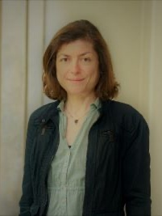

KleinLab - Uncertainty Quantification and Statistical Learning
Team

Members
|  |
Prof. Dr. Nadja Klein // Group Lead //
Nadja has been holding the W3 professorship for “Uncertainty Quantification and Statistical Learning” at the Center for Trustworthy Data Science and Security and TU Dortmund since April 2023. She is also a Emmy Noether Research Group Leader as well as a member of AcademiaNet, Die Junge Akademie and the Humboldt network (by the Alexander von Humboldt Foundation), among others. Nadja completed her doctoral studies in Mathematics at the Georg-August-Universität Göttingen, before conducting as a postdoc at the University of Melbourne as a Feodor-Lynen fellow by the Alexander von Humboldt Foundation. Afterwards she was a Professor for Statistics and Data Science at the Humboldt-Universität zu Berlin before joining TU Dortmund. |
|
Paul Bach // PhD Student //
Paul joined the lab as a PhD student in December 2019. He holds a master's degree in mathematics from HU Berlin and worked as a biostatistician at Charité Berlin before joining the lab. His main research interests are in the fields of distributional regression models, Bayesian computational methods, biostatistics and spatial statistics. |
|
|
Guillermo Briseno-Sanchez // PhD Student //
tbd. |
|
 |
Tim-Moritz Bündert // PhD Student //
Tim studied Data Science and Statistics at the University of Tübingen and the Berlin University Alliance. He joined the lab in November 2022 as a student research assistant and in October 2023 as a PhD student. Currently, he is working on robustness and theoretical properties of Bayesian Deep Learning involving adversarial attacks. |
 |
Ekin Celikkan // PhD Student //
tbd. |
|
Clara Hoffmann // PhD Student //
Clara joined the lab as a PhD student in February 2023. Prior, she obtained a Bachelor's in Economics from Humboldt University and a Master's in Statistics from the Berlin University Alliance. Clara is working on deep Bayesian uncertainty quantification within the DesBi project to obtain calibrated predictions for MRI scans. |
|
|
Lucas Kock // PhD Student //
Lucas joined the lab in October ’19. He obtained his Masters in Mathematics from Humboldt-Universität zu Berlin. His research passions revolve around deep mixture modeling, distributional regression, and the realm of approximate Bayesian inference. |
|
|
Victor Medina-Olivares, PhD // Postdoctoral Researcher //
tbd. |
|
 |
Pallavi Mitra // PhD Student //
tbd. |
 |
Christian Schlauch // PhD Student //
tbd. |
 |
Michael Stanley Smith // Mercator Fellow //
Michael is Mercator Fellow in our Emmy Noether Research Group. He holds the Chair of Management in Econometrics at Melbourne Business School since 2007. Being a leading researcher in Bayesian statistics and business analytics, his work has been published in top academic journals in statistics, econometrics, marketing and forecasting. |
 |
Ivan Ustyuzhaninov // Postdoctoral Researcher //
Ivan joined our research group as a postdoctoral researcher in April 2023. His primary focus is on Bayesian machine learning, with a particular emphasis on Bayesian neural networks, neural processes, and the quantification of uncertainty. Ivan earned his Ph.D. and Master's degrees in machine learning and computational neuroscience from the University of Tübingen. He also holds a diploma in mathematics from Moscow State University. |
|
Annalena Weissert // Student Assistant //
tbd. |
Alumni
- Maarten Jung // Research Assistant
- Bettina Schmidt // PhD Student
- Till Bethge // Student Assistant
- Jana Kleinemeier // Student Assistant
- Jost von Petersdorff-Campen // Student Assistant
- Laura Hucker // Student Assistant
- Nicolai Hans // PhD Student